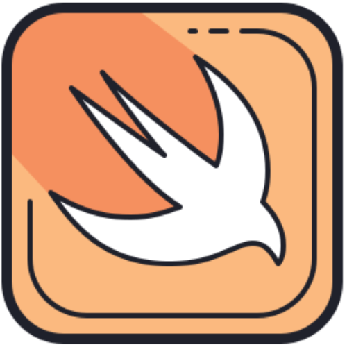

Go
Combina la eficiencia y rendimiento de lenguajes como C con la simplicidad y productividad de lenguajes modernos.
La posición en el ranking de stack overflow es 11.
Java
Java es un lenguaje de programación ampliamente utilizado para codificar aplicaciones web.
La posición en el ranking de stack overflow es 8.
C++
La intención de su creación fue extender al lenguaje de programación C y añadir mecanismos que permiten la manipulación de objetos.
La posición en el ranking de stack overflow es 10.
Javascript
JavaScript es una de las tecnologías fundamentales de la WWW, junto con HTML y CSS.
La posición en el ranking de stack overflow es 1.
Swift
Es un lenguaje multiparadigma creado para desarrollar software en plataformas Apple.
La posición en el ranking de stack overflow es 16.
TypeScript
TypeScript es un lenguaje de programación de código abierto, lanzado en 2012 por Microsoft.
La posición en el ranking de stack overflow es 6.